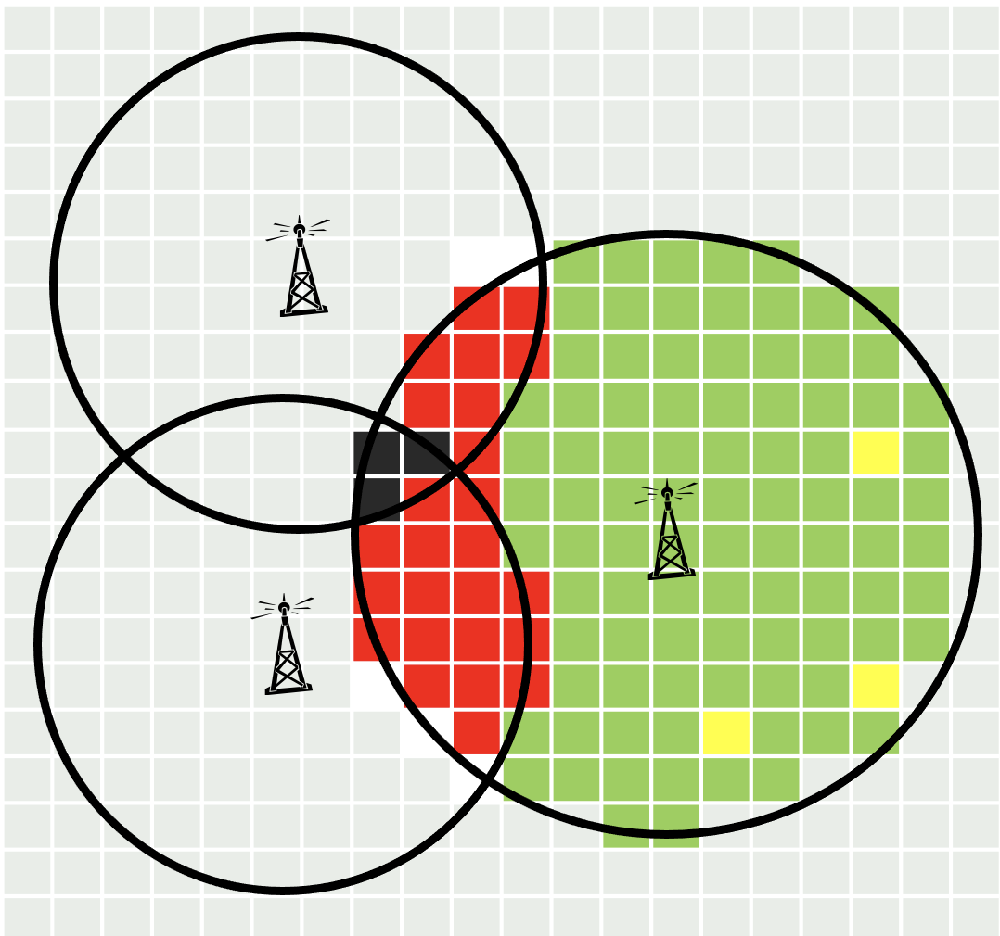
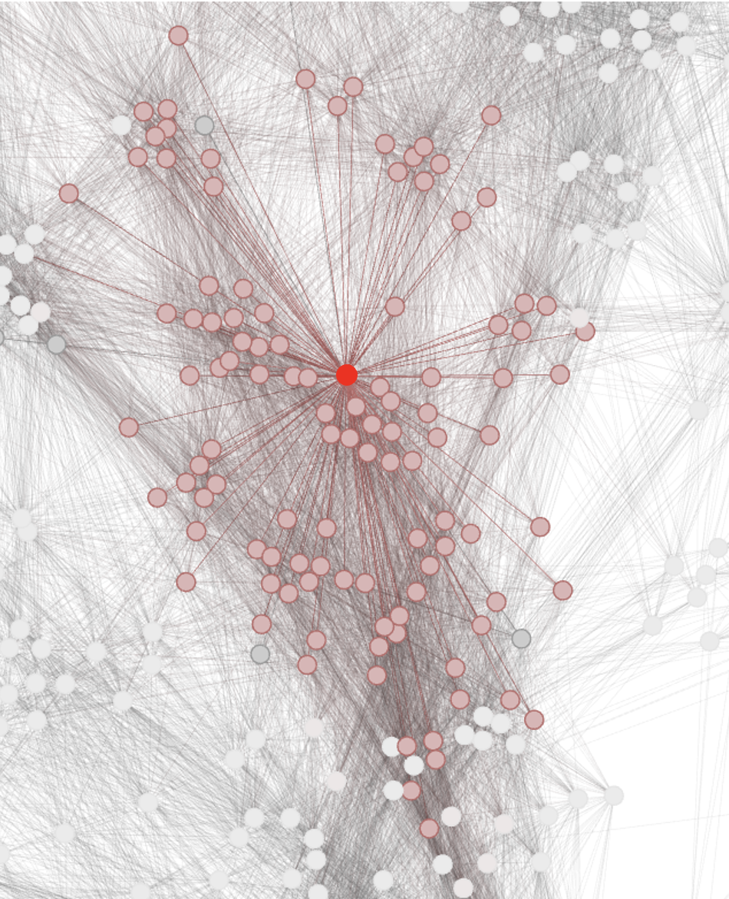
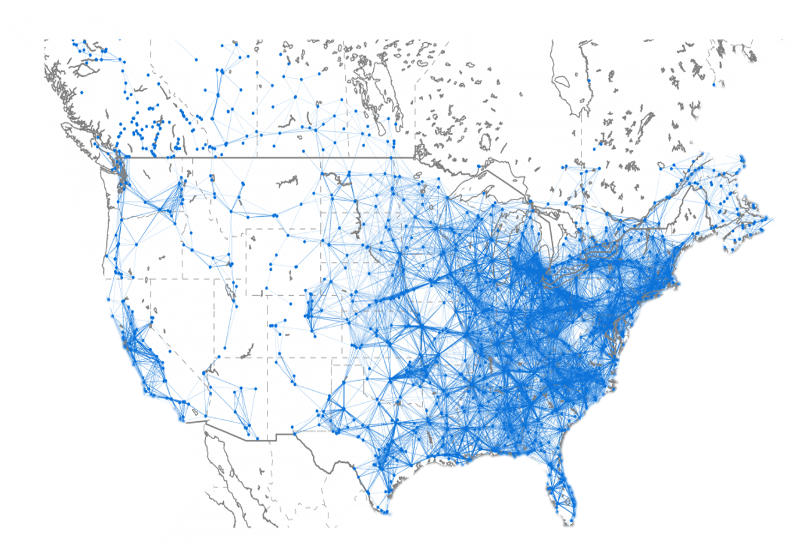

Incentive Reverse Auction#
What is the Broadcast Incentive Auction?#
Tip
Watch a video!
Constrained Channel Assignments#
{kind=link}
For each station, fewer than \(0.5\%\) of existing customers may suffer interference from another station.
{kind=link}
Each “node” represents the location of a (ultra high frequency) UHF-TV station. Each “arc” represents a pair of stations that cannot both be assigned to the same channel without causing unacceptable interference. Nodes connected to the central red node are shown in pink.
{kind=link}
A set of stations can all continue to broadcast if there is a way to assign channels to the stations without interference. There are about \(130,000\) co-channel constraints shown in the graph. (\(2.7\) million detailed constraints). This is similar to graph coloring, which is an NP-complete problem.
FCC’s 2011 Initial Internal Proposal#
They proposed a variant of the pivot mechanism (“Vickrey auction”) with allocation and prices:
where \(S^{*}\) is the set of stations to remain on-air and \(p_i\) is the price paid to stations going off-air \((i \not\in S^{*})\) which can be interpreted as the “opportunity cost.”
Percentage pricing errors around \(2500\) times optimization errors. FCC computational experiments showed that computed approximate Vickrey prices were badly inaccurate
Problems with Vickrey Auction#
Depends on intractable computations
Requires very high trust
Ignores procurement budgets
Is not group strategy-proof
Cannot balance efficiency and cost objectives
May produce an uncompetitive high price vector
Reveals winning bidders’ values
Important
As we will see, these deficiencies can all be overcome at little efficiency cost for the incentive auction!
Vickrey auctions also require too much trust in practice. The auction model can be difficult to interpret, so many bidders barely understand the computations. Most cannot determine the outcomes from the bids. The FCC can’t even guarantee that computations will be accurate, and by law, they can’t share bid data to allow verifying the computation.
Remark 8
The Vickrey auction is not budget aware, group strategy-proof, or generally price competitive.
{kind=link}
Proof. Consider the following example. Initially, stations \(A\) and \(B\) share a channel and \(C\) uses another. Our goal is to reduce use from two channels to one. Optimization: If \(v_A + v_B < v_C\), then we should buy \(A\) and \(B\); otherwise, we should buy \(C\). If \(C\) wins, the Vickrey prices are \(p_C = v_A + v_B\). If \(A\) and \(B\) win, they are \(p_A = v_C - v_B\) and \(p_B = v_C - v_A\). As this example shows, the Vickrey auction is:
NOT budget aware: infeasible if total price exceeds budget
NOT group strategy-proof: if \(A\) and \(B\) both bid \(0\), they will win and receive maximum Vickrey payments of \(\hat{p}_A = \hat{p}_B = v_C\)
NOT generally price competitive. If \(A\) and \(B\) win, \(p_A + p_B > v_C\)
Milgrom-Segal Descending Clock Auctions#
Milgrom-Segal descending clock auctions overcome the problems of the Vickrey auction:
can compute well and quickly
require no bidder trust
can accommodate budget constraints
are group strategy-proof (without side payments)
can accommodate any mix of efficiency and cost minimization objectives
produce competitive, market-clearing prices
preserve winner privacy
Clock Auctions as Heuristics for Optimization#
The Channel Reallocation Optimization Problem#
Goal: Given the current set of stations \(N\), find the feasible subset of stations \(S^{*}\) that should continue to broadcast (in a more limited set of channels) to maximize the total value of the stations remaining on-air.
where \(v_n\) are station values.
The Classic “Knapsack Problem”#
where \(K\) is the knapsack constraint.
Algorithm 22 (Greedy Packing)
Order items so that \(\frac{v_1}{s_1} > \frac{v_2}{s_2} > \dots\) and ignore ties.
“Pack” items in numerical order so long as there is space remaining. If there is no room to pack an item, set it aside and continue.
The difference between the maximum value and the greedy algorithm value is at most \(\frac{v_{m}}{s_{m}}\left(K-\sum_{j=1}^{m-1}s_{j}\right)\): a fraction of the value of the first item \(m\) that is excluded from the knapsack.
An Equivalent Descending Clock Auction#
An informal description of one descending clock auction :
The “base clock” \(q: [0, 1] \to \mathbb{R}_+\) is a continuous, decreasing function of “time” with \(q(0)\) large and \(q(1) = 0\).
At each time \(t \in [0,1]\), if there is still space for station \(j\), its tentative offer price \(p_j(t)\) to go off air is set to \(s_j q(t)\).
Bidders decide whether their offers are acceptable.
If after the decisions at \(t\) there is no space left for station \(j\), then for \(t' > t\), its offer price \(p_j(t')\) is set to \(p_j(t)\).
“Bid truthfully” means: “Remain active at \(t\) if \(p_j(t) > v_j\); otherwise, exit and continue broadcasting.”
Proposition 4
In this clock auction, if all bidders bid truthfully, then the same bidders are packed on air in the same order as for the preceding greedy algorithm.
Instead of proceeding continuously as in the informal example, it proceeds in a series of discrete rounds using a finite set of possible non-negative prices \(P\).
An auction rule is a function \(p: H \to P^N\) that maps history of bidder activity in previous rounds into current price vector.
The price offered to a bidder in any round must be no higher than in the previous round.
The auction ends in the first round that no prices change.
Every such function describes a different auction.
Important
Some descending clock auctions using fast heuristics compute quickly. In knapsack problems, some also compute “well.”
- obviously dominates#
A strategy \(\sigma_n\) for player \(n\) obviously dominates another strategy \(\hat{\sigma}_n\) if whenever their recommendations differ at some information set, the best payoff that can follow the deviation is no better than the worst payoff that can follow playing \(\sigma_n\).
- obviously dominant strategy#
A strategy \(\sigma_n\) is obviously dominant if it obviously dominates every other strategy.
Theorem 18
In every descending clock auction, bidding truthfully is an obviously dominant strategy.
Corollary 1
In every descending clock auction, no coalition has a deviation from truthful bidding that strictly increases all coalition member payoffs, regardless of any strategies of the other bidders.
Proof. (Sketch) By obvious strategy-proofness, the first player in the coalition to deviate cannot benefit from her deviation.
Property 1
Descending clock auctions:
can be chosen to compute quickly and well
are obviously strategy-proof
are group strategy-proof (absent transfers)
can always be extended to accommodate budget constraints
produce ex post competitive, market-clearing prices
can be chosen to accommodate cost minimization
(uniquely) preserve winner privacy
- budget-respecting#
\(p_B\) is a budget-respecting extension of \(p\) for budget \(B\) if
\(p_B\) is a clock descending auction for which the total cost can never exceed \(B\)
for any value profile \(v\) such that \(p\) realizes total cost less than \(B\), the courses of prices for \(p_B\) and \(p\) are identical.
Theorem 19
For every descending clock auction \(p\) and every budget \(B>0\), there exists a budget-respecting extension \(p_B\) for budget \(B\).
Transforming the Cost-Minimization Objective#
In a procurement auction that incentivizes truthful bidding, the expected total payment can be rewritten in this form:
We would like to design the auction so that for each vector \(v\), we minimize the following expression (approximately):
Proposition 5 (Greedy Optimization)
Suppose that each \(C_n(\cdot)\) is increasing and continuous and that station sizes are taken to be \(s_n > 0\). If a clock auction sets prices for feasible stations at each time \(t\) to satisfy \(\frac{1}{s_n}C_n(p_n^*(t)) = (1 - t)\bar{v}\) then, for all \(v \in [0, \bar{v}]^N\), the clock auction “greedily maximizes” the objective.
Notation
Given descending clock auction \(\hat{p}\) and any value profile \(v\), let \(\hat{\omega}(v)\) denote the set of winners and \(p_{\hat{\omega}}(v)\) denote the the prices they pay.
Theorem 20
The price profile \((p_{\hat{\omega}}(v), v_{-\hat{\omega}(v)})\) (in which winners bid their \(\hat{p}\)-prices and losers bid their values) is a Nash equilibrium of the first-price auction sealed-bid auction with value profile \(v\) and winner selection rule \(\hat{\omega}\).
- unconditional winner privacy (UWP)#
An (extensive-form) communication protocol satisfies unconditional winner privacy (UWP) if no winner reveals any information about his value beyond what is needed to prove that he should win, given others’ values.
Theorem 21
Every descending clock auction with truthful bidding satisfies UWP.
If a monotonic winner selection rule can be implemented by a protocol that satisfies UWP, then it can be implemented by a descending clock auction with truthful bidding.